Артём Мазурин. Придумываю сценарий, генерирую героев и сцены, оживляю, озвучиваю и монтирую. Отдельно веду блогеров: от поиска до опубликованного рилса.
15ИИ-роликов и монтажей
722 тыс.просмотров у рилсов блогеров
25интеграций на 8 языках
ИИ-ролики
Реклама и органика для Efaga, моего приложения-счётчика калорий. Каждый ролик собран от сценария до финала: генерация кадров, анимация, голос, синхрон губ, монтаж в коде.
«And now I find this?»ИИ-героиня в шоке за 3 секунды, дальше три фичи приложения. Женская версия.Flux · Kling · ElevenLabs«And now I find this?» — мужскаяТот же сценарий, другой герой: A/B для платной рекламы.Flux · KlingСкетч в фитнес-кафеДиалог с бариста, POV-скан витрины, реальные экраны. Голоса персонажей.Nano Banana · Kling · ElevenLabsСкетч в фитнес-кафе — мужскаяОдна сцена, одни и те же лица на всех кадрах.Nano Banana · Kling«#1 mistake»Хук в примерочной, онбординг в мокапе, кружки и push-in. Для Meta Ads.Flux · Kling · ElevenLabs«#1 mistake» — мужскаяСвоя история для мужской аудитории.Flux · KlingРеакция на вирусный рилсИИ-героиня с синхроном губ отвечает блогеру. 1,3 тыс. просмотров за сутки на аккаунте с 5 подписчиками.Lip-sync · ElevenLabsЭфи разбирает рецептСерия: героиня в окошке смотрит чужой рецепт, приложение считает его по-настоящему.Nano Banana · Kling · lip-syncЭфи разбирает рецепт — эпизод 1Полный формат серии с записью экрана приложения.Монтаж · lip-syncМоушн «one tap»Маскоты Эфи и Фаго, анимация в коде, озвучка двумя голосами.HTML-анимация · ElevenLabsПревью для App StoreЗапись экрана в рамке телефона, подписи в полосе над ней.Монтаж«My whole day»Органика: настоящая еда, плашки калорий поверх видео.МонтажРецепт пиццы с голосомОрганика с закадровым голосом.ElevenLabs · монтаж«It fits»Короткий органический рилс.Монтаж«Which one has more calories?»Формат-угадайка с отсчётом.Монтаж
Генерация персонажей
Главная сложность ИИ-видео — чтобы герой был одним и тем же человеком во всех кадрах. Сначала лист персонажа, потом от него все сцены.
Лист персонажа Эфи: анфас, три четверти, профиль, спина, лицо. Один персонаж во всех роликах.Мастер-кадр лица ЭфиЭфи на кухне — кадр под синхрон губГерой хука «shock»Мужская версия
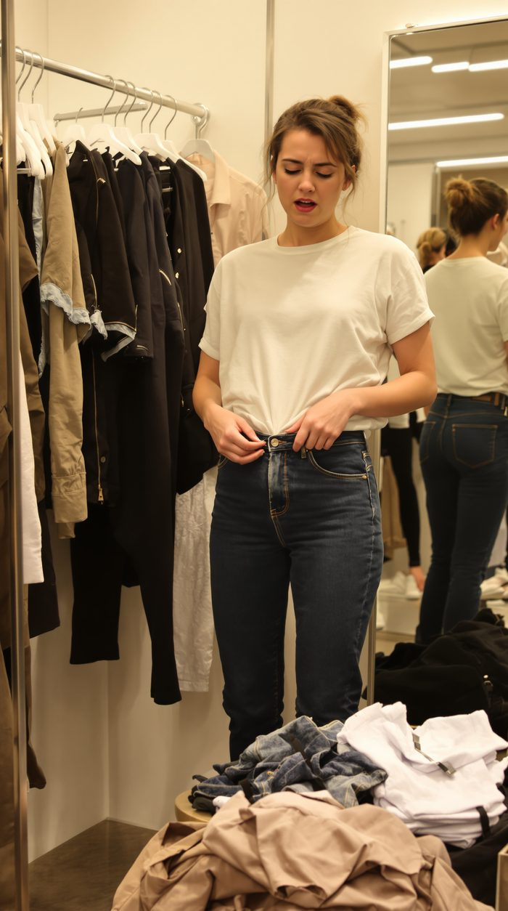
Хук «примерочная»
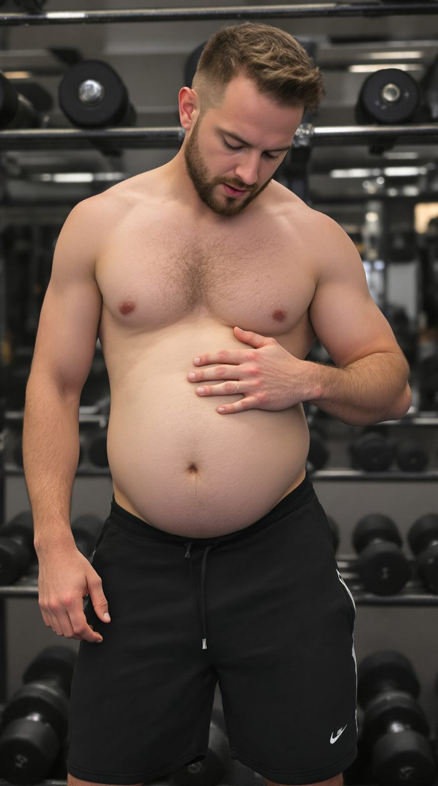
Хук «зал»Раскадровка скетча в кафе: одни и те же лица в трёх сценахРаскадровка «#1 mistake» для двух аудиторийПервая версия Эфи
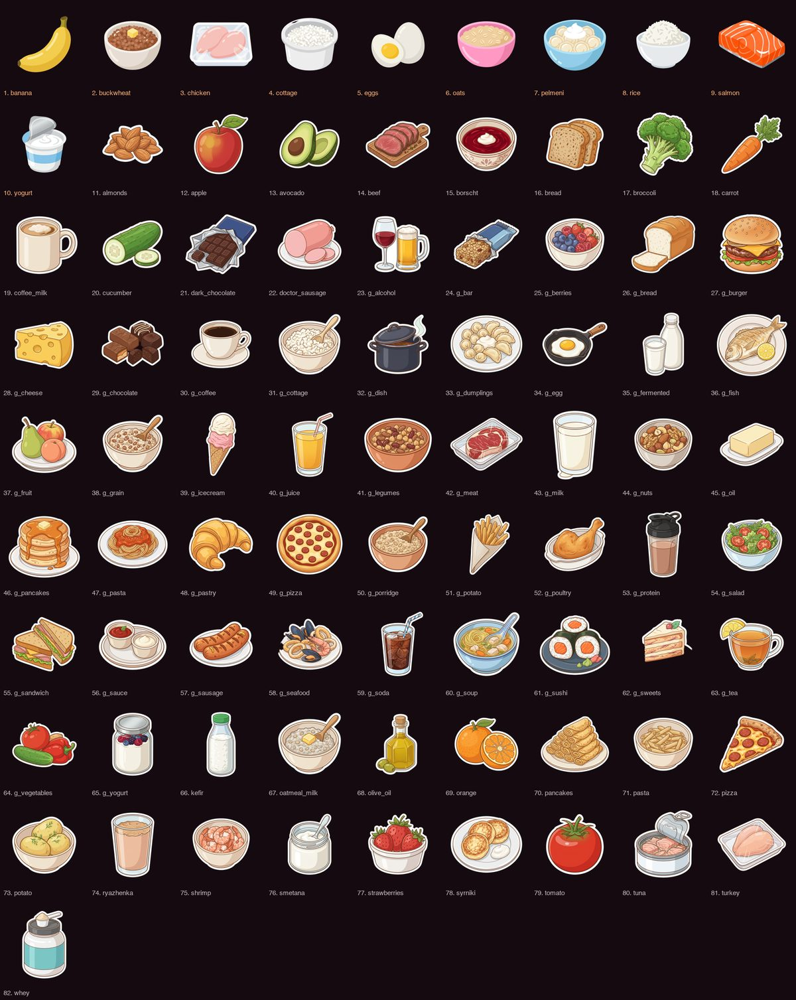
99 сгенерированных наклеек еды для интерфейса приложения
Статика
Баннеры для Meta Ads, 4:5 и 9:16, в двух языках. Свой маскот, иллюстрации еды, реальные экраны приложения.
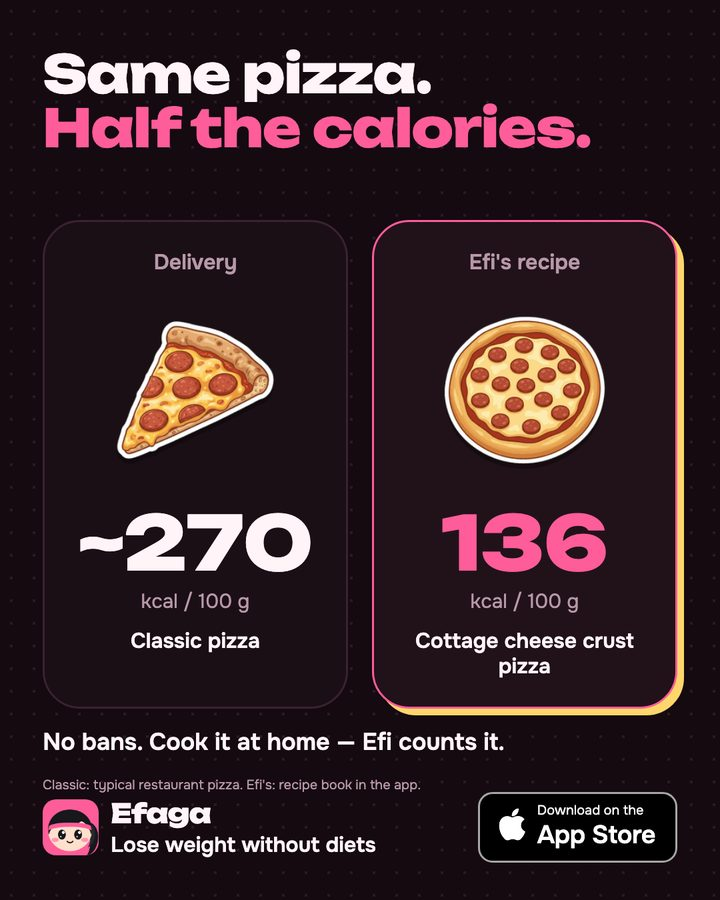
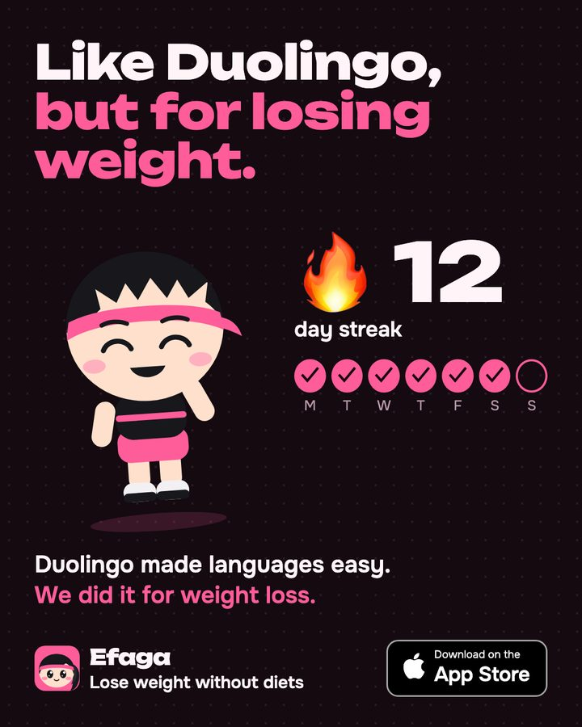
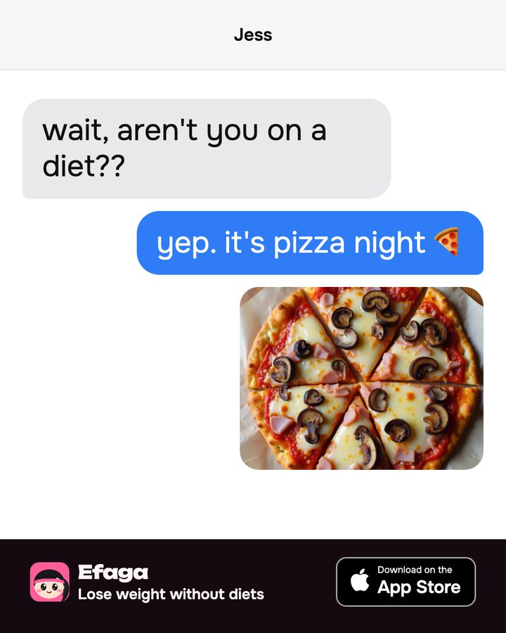
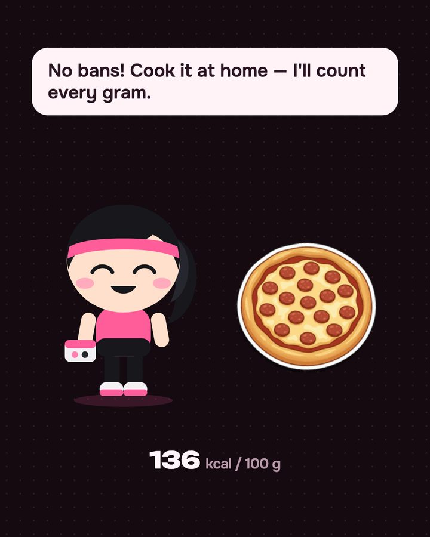
Нативные форматы
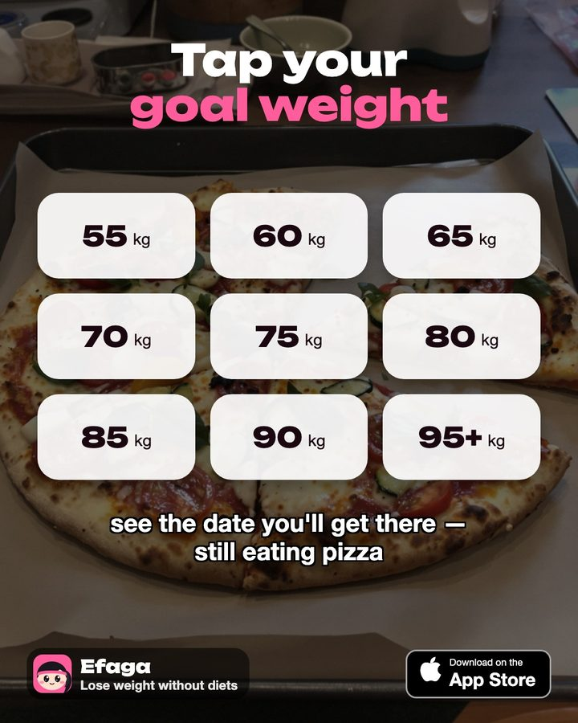
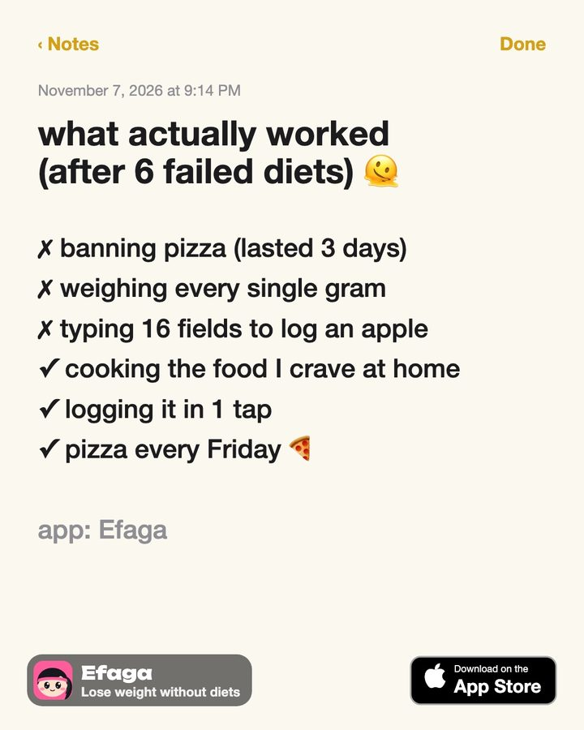
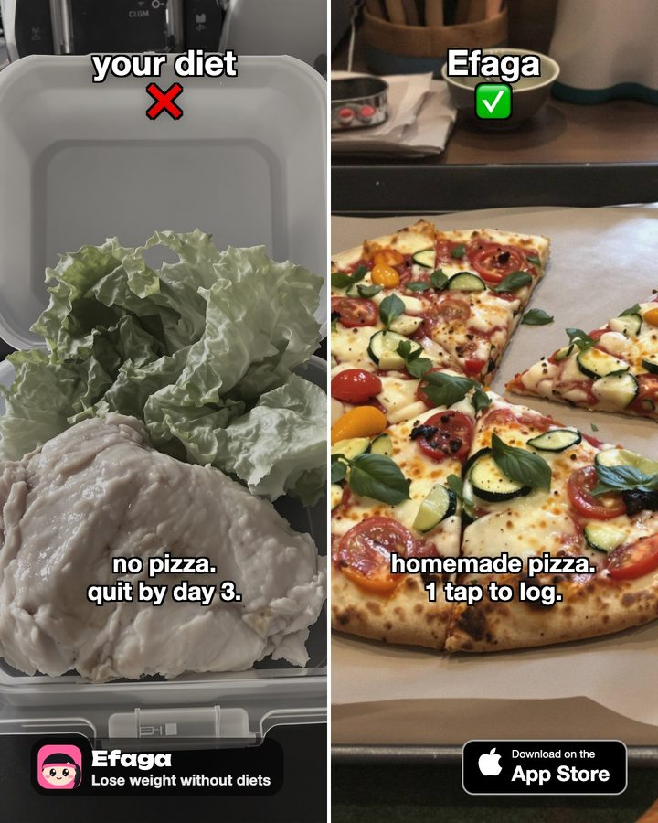
Страница в App Store
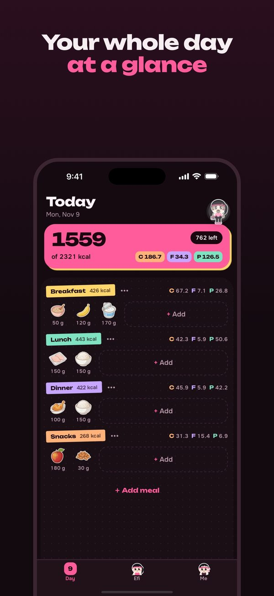
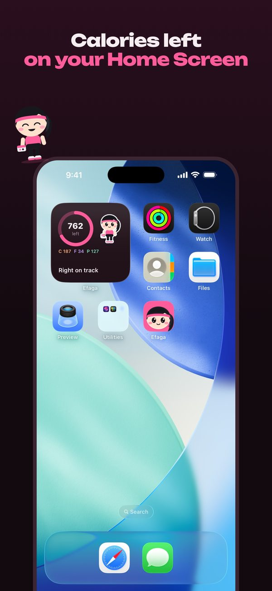
Инфлюенс-маркетинг
Рилсы блогеров для EdTech-приложений по медицинскому и авиационному английскому. Моя часть: поиск и отбор авторов, переговоры, брифы и сценарии, ревью черновиков и монтажа, публикация в коллаборации. Видео сняли сами блогеры.